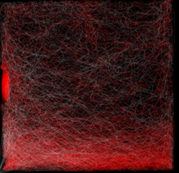

BRAIN

My research focuses on understanding the neural mechanisms underlying insect behavior,
with a particular emphasis on chemosensation. In particular I am interested in how neurons sense
and combine stimuli of opposite valence to guide complex behaviors such as host-seeking.
BEHAVIOR

Okay, I consider behavior the most interesting aspect of my research. I am particularly
interested in quantitative, fine-grained analysis of freely moving animals. I mainly use
machine learning-based tools to detect, track and analyze the behavior of multiple animals.
I support the idea that a closer look at behavior can provide insights into the neural basis of
decision-making, and that behavior on its own right its a powerful tool to understand not only the brain,
but the adaptive processes that sculpted it over million of years of evolution.
TOOLS
I am a fan of DIY solutions that provide high-quality data. I have developed a series of
custom-made tools to study insect behavior, including a low-cost, high-resolution tracking system.
Where possible I support a frugal approach to science, and I am always happy to share my tools and
code with the community. I believe that science should be open and accessible to everyone. This might
sound like a cliché, but I truly believe that open-source tools and data sharing are the future of science.
FIELDWORK

Since my undergraduate years, I have tried to gain as much fieldwork experience as possible. I have worked
in remote regions such as the dry forest of North Madagascar and the Utah Desert, where I conducted biological
and ecological surveys. I have been part of thre consecutive Mars Society expeditions aimed at surveying the biodiversity
of the Utah Desert surrounding the Mars Desert Research Station. I think that fieldwork is a important now more than ever as
the rate of extinction is increasing, and documenting biodiversity has become crucial. Advancements in technology have
made quantitative research in the field more accessible, and I am excited to see how the field of ecology will meet the field of
neuroscience in the near future.